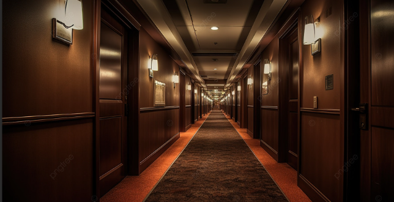

Certo dia estava lendo histórias reais na internet e me deparei com uma de uma tal cidade perdida, conforme fui lendo percebi que morava perto de onde se tratava e como sempre fui muito curiosa e corajosa entâo decidi tirar essa história a limpo.
Você decide ir de bicicleta para a missâo mas acaba chegando ao anoitecer e muito cansada.
Você decide ir de onibus e acaba pegando um trânsito até seu destino.

Você encontra um hotel meio sombrio para descansar.
Você decide voltar para casa para descansar.
Você decide continuar a pé mas nâo sabe o caminho e acaba se perdendo, foi uma má escolha.
Você pega outro onibus e volta para casa, foi uma boa escolha.